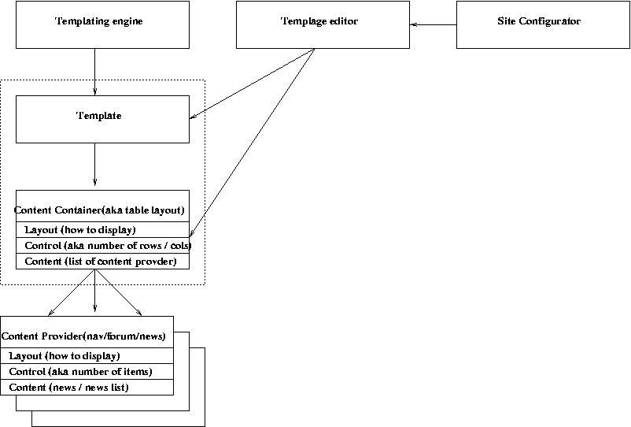

Templating systeem voor de VPRO
Voor de programma sites van de VPRO is het de bedoeling zonder
tussenkomst van techniesch personeel nieuwe sites te kunnen maken voor
programma's. Hiervoor moet een component worden ontwikkeld die het
mogelijk maakt op relatief eenvoudige wijze nieuwe sites te maken. VPRO
heeft ongeveer aangegeven welke functionaliteit zij wensen. Hier een
korte opsomming
-Een nieuwe programma site kunnen aanmaken
-er moet kunnen worden gekozen uit de beschikbare
functionaliteiten (wel/geen forum)
-er moet worden aangegeven hoe complex de site zou
moeten zijn (is het een kleine site of een grote)
-De navigatie moet kunnen worden geconfigureerd (deels afhankelijk van
de gewenste complexiteit van de site , maar er zijn meerdere aspecten
zoals de beschikbare inhoud voor de betreffende site)
-Per programma site moeten een aantal zaken te configureren zijn
(kleurstelling en algehele layout)
We hebben als uitgangspunt het bestaande VPRO object model als "proven
concept" aangehouden en willen hier zo weinig mogelijk aanpassingen aan
hoeven doen. M.A.W we willen er voor zorgen dat met het Templating
systeem het object model niet aangepast hoeft te worden.
We onderscheiden 4 gebruikers van het systeem
- de super user die een nieuwe site zal maken en de algehele layout
zal bepalen
- de programmeur die eventueel nieuwe type componenten zal maken
- de redacties van de programma's
- de web surfer die de site zal bezoeken
Met de komst van het Templating systeem komen we de "super user"
tegemoet. Gezien we het object model niet willen veranderen gaan we er
van uit dat de redactie onafhankelijk van het Templating systeem zijn
content zal invoeren (via editwizards). voor de programmeur willen we
het mogelijk maken nieuwe content items te maken hier zal echter geen
"web" interface voor worden gemaakt. met de Web surfer wordt vooralsnog
geen rekening gehouden (geen personalisatie).
We willen een interface maken voor de super user om nieuwe sites te
maken. hiervoor is een Templating systeem nodig. hier volgt een kort
overzicht van de componenten die gebrouwd zullen worden
Overzicht van de componenten
Template engine
De template engine is de motor van het systeem en heeft als
belangrijkste verantwoordelijkheid het genereren van pagina's. de
template engine zal aan de hand van parameters bepalen welke vormgeving
er gebruikt zal moeten worden en wat inhoud moet zijn van de pagina
Templates en ContentContainers
Raamwerk dat verantwoordelijk is voor het genereren van HTML code voor
het correct op de juiste plek weergeven van de verschillende elementen
in de pagina. Naar alle waarschijnlijkheid zal hier een tabel layout
voor gebruikt worden. De template is een lege huls (lees pagina) in
deze huls kan een layout wordt gezet (lees ContentContainer /tabel
/div's). de template en container vormen de layout , voor de inhoud
wordt gebruit gemaakt van content providers
ContentProviders
Content providers zijn er voor verantwoordelijk inhoud uit mmbase te
halen en deze te presenteren. In zijn eenvoudigste vorm is dit een jsp
pagina die "inhoud" leverd".
Het vormen inhoud blokjes die geconfigureerd kunnen worden. Een
content blok kan uit verschillende stukken bestaan. Als we navigatie
als voorbeeld nemen dan zal deze meer configuratie moeten bevatten en
een editor om de navigatie te bewerken.
SiteConfigurator
De Site configurator maakt het mogelijk nieuwe sites aan te maken en de
initiële data te koppelen (over welk programma gaat deze site)
Template editor
Met de template editor is het mogelijk de layout van de site te
veranderen. Op basis van de site configuratie en de gekozen content
container kunnen zaken als navigatie en inhoud van de blokken bepaalt
worden.
